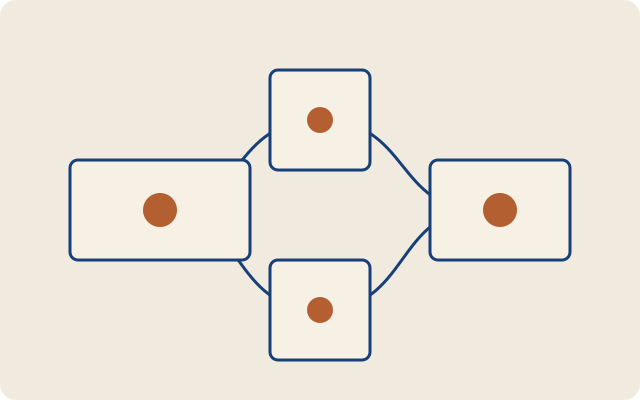

<section class="ex-page sp-cover-technical" data-single-page-role="cover" aria-labelledby="sp-technical-title">
  <div class="sp-cover-technical__topline"><p data-slot="event">团队讨论 / TECHNICAL SESSION</p><span aria-hidden="true"></span></div>
  <h1 class="sp-cover-technical__title" id="sp-technical-title" data-slot="title"><span class="sp-cover-technical__lead">理解</span><strong>复杂系统</strong><span>的协作机制</span></h1>
  <div class="sp-cover-technical__hero">
    <div><p class="sp-cover-technical__subtitle" data-slot="subtitle">从关键概念出发，建立可解释、可迁移的理解。</p><p class="sp-cover-technical__question" data-slot="question">它试图解决什么问题？又通过什么机制实现？</p></div>
    <figure data-slot="illustration"></figure>
  </div>
  <footer class="ex-page__footer"><div><p data-slot="organization">[组织名称]</p><p><span data-slot="presenter">[分享者]</span> · <time data-slot="date">[YYYY-MM-DD]</time></p></div><p data-slot="source">[主要来源与授权状态]</p><span><!-- SUANHAI_PAGE_NUMBER --></span></footer>
</section>
